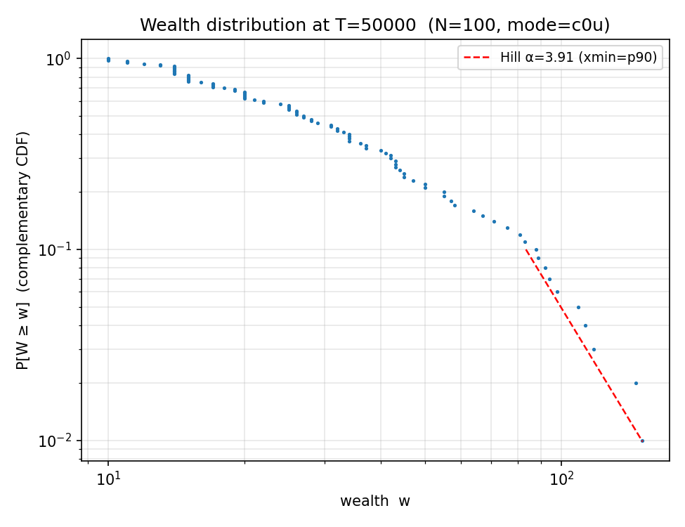
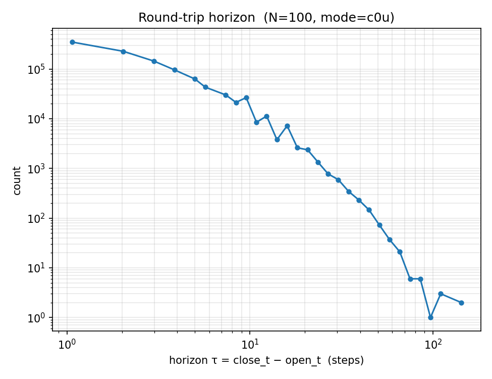
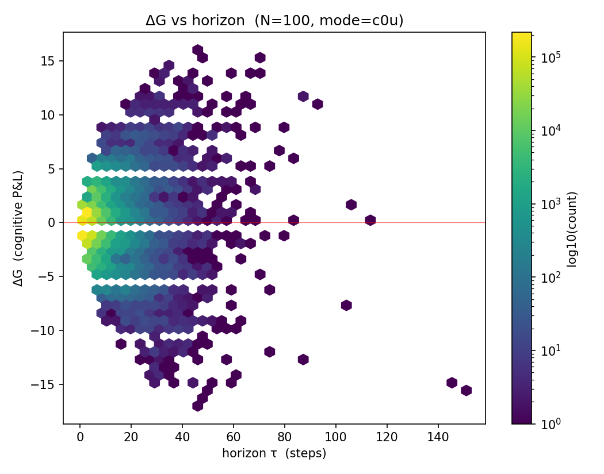
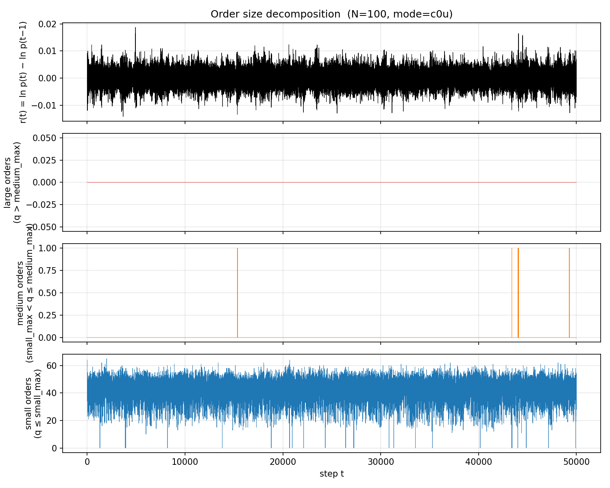
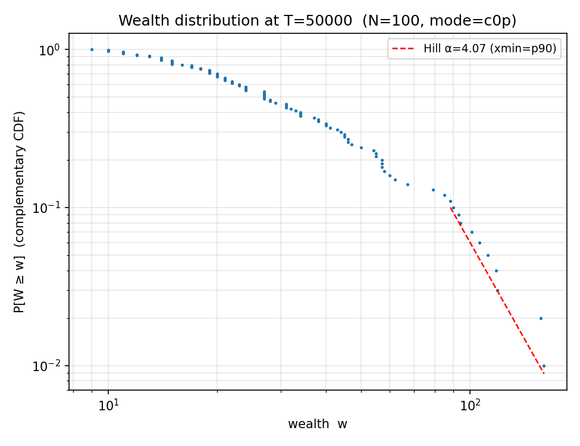
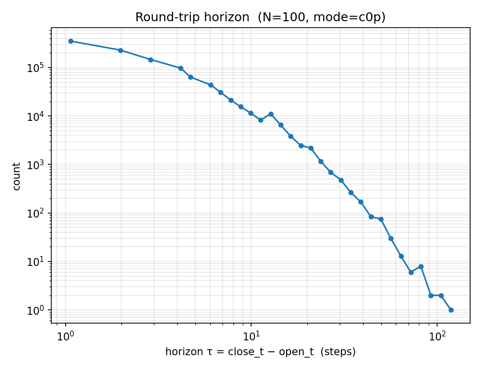
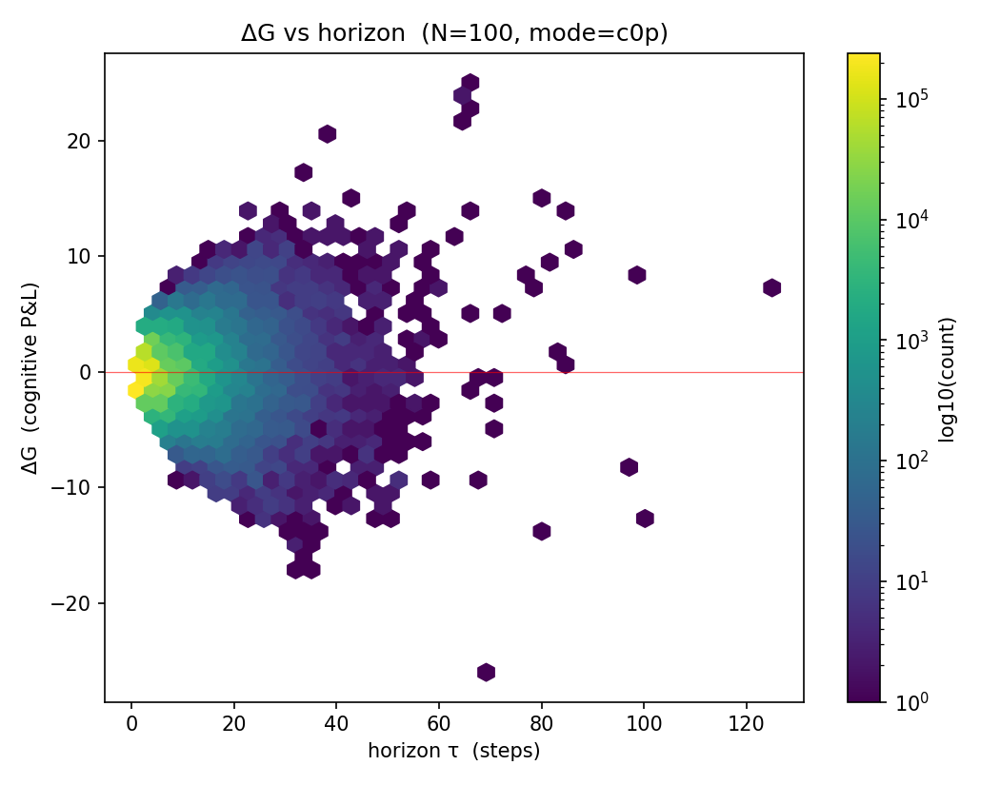
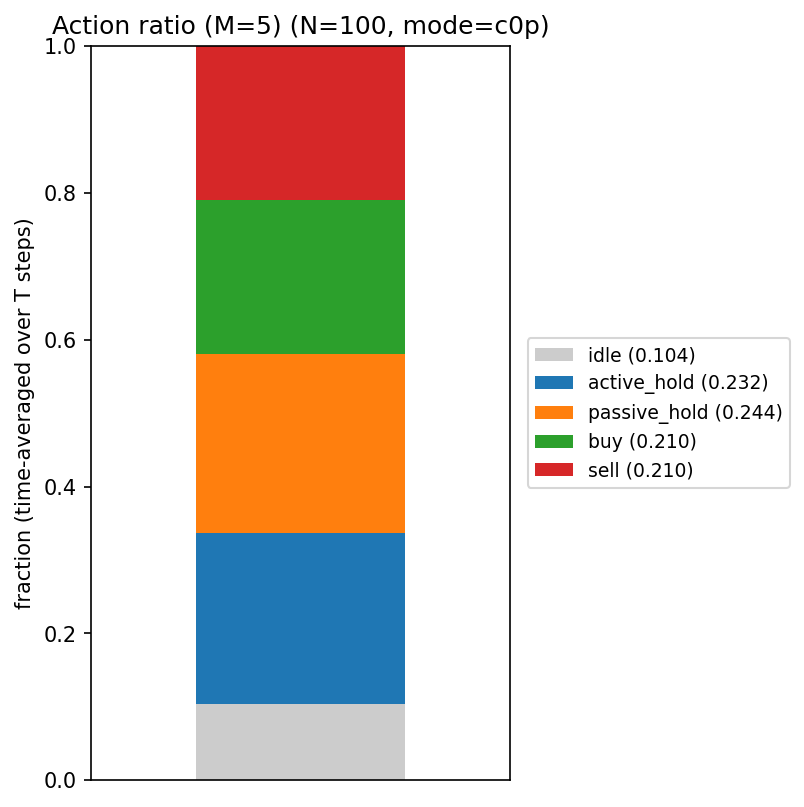
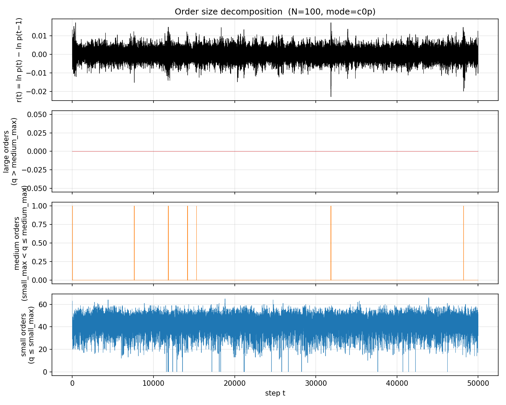

YH006 · Speculation Game on LOB (PAMS)
Katahira-Chen 2019 SG decision rule を Hirano-Izumi 2023 PAMS の tick-scale LOB に移植 · 2×2 (world × wealth), N=100
SG の意思決定ルールを板情報(LOB)環境に載せ替え、aggregate-demand 世界(C0u/C0p)と LOB 世界(C2/C3)で YH005_1 の 5 機構図がどう保存/破壊されるかを比較する。これは結果ビューア: LOB 側は PAMS ライブラリと parquet データに依存しブラウザでは走らせられないため、生成済みの図と確定数値を表示する。
2×2 比較 (world × wealth)


2×2 主要メトリクス (seed=777, N=100)
| metric | C0u (agg×uni) | C0p (agg×Par) | C2 (LOB×uni) | C3 (LOB×Par) | C1 (null) |
|---|---|---|---|---|---|
| num_round_trips | 1,041,712 | 1,049,903 | 879 | 1,080 | 0 |
| median horizon | 2.0 | 2.0 | 2.0 | 2.0 | — |
| α_hill (wealth p90) | 3.910 | 4.068 | 1.98 | 1.91 | — |
| corr(|ΔG|, horizon) | 0.353 | 0.347 | 0.61 | 0.33 | — |
| active_hold | 0.234 | 0.232 | 0.324 | 0.327 | 0 |
| passive_hold | 0.246 | 0.244 | 0.353 | 0.330 | 0 |
| idle | 0.104 | 0.104 | 0.004 | 0.005 | — |
α_hill の tail サンプル n_tail=10、点推定誤差は大きい。有意性は Phase 2 (YH006_1) で 100 trial bootstrap CI を取るまで方向性の指標として読む。
C0u — aggregate × uniform (5 機構図)




C0p — aggregate × Pareto α=1.5 (5 機構図)





LOB 側 (C2/C3) の per-condition 図は experiments/YH006/outputs/(git 管理外)に生成される。Phase 2 の機構解明は YH006_1 ビューア へ。